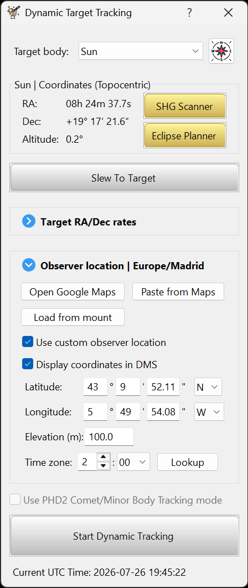

A total eclipse gives you one opportunity under strict timing constraints. This is the most important page in the guide:
the work that makes eclipse day calm is all done in the weeks before it.
Why this matters
Totality often lasts only a few minutes and there is no second take. Every problem you solve
the week before is a problem you are not solving while the corona is out. The goal is that on the day, the
software runs the sequence and you watch the sky. Aim to reach the point where the sequence, the cues,
the filter swaps and the refocus feel like muscle memory.
The advance checklist
1 Set the site and start the plan early
Set your observing site first. Before opening the planner, open the Dynamic Target
Tracking tool (the astronomer button), select Sun in the
Target body: list, and select the location where you'll observe. The
Eclipse Planner button appears only while Sun is the selected
target body. The site's exact coordinates and time zone drive the timing of every phase. Open the planner with
that button and build the starting plan. Do not approve it until you have measured and applied the imaging base
in the next step, reviewed the derived phase recipes and run the camera benchmark. After that,
approve the completed plan and run simulations against it until the flow is familiar. Edits
made later leave an unapproved draft that the preflight dialog will flag.
If your exact spot changes later, even on eclipse day, update the site in that tool. The planner
readjusts all the contact timings automatically. Nothing else needs to change as long as you are still within the
totality path.

Select
Sun to reveal the Eclipse Planner button, and set the observing
site before searching for an eclipse.
Assemble the same main scope, camera, optical train and complete filter stack you intend to use for the eclipse. In
SharpCap, frame the filtered full solar disk and adjust exposure and gain until the photosphere
is bright and detailed without clipping. Record that pair and the effective total ND rating. If a certified
ND 5.0 solar filter is supplemented by a standard photographic ND filter, add their optical densities; for
example, one additional stop (ND 0.3) gives an effective density of ND 5.3. Never use a photographic
ND filter as the solar filter on its own.
Enter the values under Imaging base in
Plan preferences.... HelioMaker automatically calculates the exposure plan by combining
the full solar disk exposure, camera gain and filter density with
Fred Espenak's eclipse exposure
recommendations to derive the exposure and bracket recipe for every phase. Keeping the same camera gain
across all phases is recommended. Tune individual recipes afterwards in the
Phase editor, run the System benchmark test, then approve and rehearse the
resulting plan.
Do not leave this until the run
Once automated imaging starts, the current version locks exposure and gain for that run. Measure them on an
ordinary sunny day whenever possible. The initial partial phase is the last practical opportunity, and only
if you finish the measurement and update the plan before selecting
Start.
3 Practise daytime polar alignment
At eclipse time the Sun is up and Polaris is invisible, so your normal nighttime alignment routine does not
apply. You need a reliable daytime / solar polar alignment routine that you have done before.
HelioMaker's integrated help has a full chapter on this: Daytime Polar Alignment Using HelioMaker and PHD2.
It uses PHD2's Guiding Assistant or Drift Alignment tool on the Sun. Practise it on ordinary sunny days first.
Field tip: a rough azimuth hint from the calibration angle
A practical, preliminary observation from the author (not a precise
procedure): with the mount's altitude already calibrated, PHD2's reported
calibration angle, which is the angle between the RA and DEC calibration axes, seems to hint at which
way azimuth is off:
Mount head pointing to the right of Polaris → angle < 90°
Mount head pointing to the left of Polaris → angle > 90°
Treat it as a quick nudge for azimuth between sessions, not a measurement. A short
focal length guide scope tolerates a few degrees of azimuth error and will usually still guide. This is one
observer's finding; whether the sign convention repeats across different mounts, hemispheres and guide
orientations is unconfirmed. Verify it against your own drift measurements before you rely
on it.
4 Practise solar guiding well before the day
Solar / limb guiding through HelioMaker and the custom PHD2 fork is finicky. Get PHD2 calibrating and
guiding on the Sun on several ordinary sunny days first with whichever setup you will use:
shared camera for a full solar disk main camera, or a separate guide scope with its
own camera and filter if you need guiding through totality or will image only part of the disk at high
magnification (see Gear & rig
requirements).
Do not debug guiding on eclipse day
If the first time you try to make PHD2 guide on the Sun is the morning of the eclipse, you will not have time
to fix it. Solve the calibration and guiding problems weeks ahead, on days you can afford to waste.
If the plan uses automatic refocus
Configure SharpCap Focus Assistant with the physical eclipse rig and complete at least one successful solar
focus scan before enabling automatic refocus in Plan preferences. Start with
Contrast (Edge) Detection, or use
Fourier Detail Detection if it works better for your rig. Set
Scan Step Size and Max Step Count, then manually request
SharpCap Refocus and confirm that it returns to a sharp image. See Focusing.
5 Verify your eclipse timing
In the planner, click "View all eclipses for this site". It opens
timeanddate.com for your observer coordinates
(https://www.timeanddate.com/eclipse/in/@<lat>,<lon>). Compare its
C1 through C4 contact times with the times HelioMaker computes. They should agree closely.
A large discrepancy almost always means wrong site coordinates or elevation,
or confusion between local time and UTC. Fix that before doing anything else.
Enter accurate latitude, longitude and elevation. Small position errors shift the contact
times and the totality duration.
Choose whether to apply standard atmospheric refraction in
Plan preferences. The correction uses fixed standard
conditions of 10 °C and 1010 hPa; there are no temperature or pressure entries. Preflight only
displays the plan's choice as read-only text.
On accuracy
HelioMaker's contact solver is validated against Fred Espenak's published tables to well under a second for the
core algorithm. Tiny differences of a second or two between sources are normal and come from convention
choices, including how ΔT and UT1 versus UTC are handled and which Sun and Moon disc radius convention is used,
not from an error. A difference of several minutes indicates an input problem, not a rounding difference.
6 Rehearse the full run
Rehearse the complete workflow so nothing on the day is new:
A Dry run with timing only and no capture, to learn the console, the cues and the refocus
schedule.
A Wet run against the integrated eclipse simulator so the HelioMaker capture path,
filenames and disk usage are exercised too.
A rehearsal validates a saved plan, not temporary SharpCap adjustments
If testing shows that a sequence parameter must change, put the change into Plan preferences or the Phase
editor, save it, repeat any affected camera test, and rehearse the revised plan. Once preflight is open, do
not tune sequence controlled settings manually in SharpCap: HelioMaker verifies and reapplies the saved plan
when the run starts.
Rehearse until you know, without thinking, what each cue means and what you should be doing with the filter
when it fires. → Simulation options
7 Logistics
Accurate PC clock. Synchronize it with a reliable network time source. HelioMaker has a clock synchronization step in the
preflight checklist; a wrong clock desynchronizes the whole sequence.
Charged batteries for the mount, cameras, focuser, dew heaters and the PC, with spares.
Ample free disk for the full capture. The preflight checklist estimates how much you will need.
A complete chain test with HelioMaker, SharpCap Pro and the custom PHD2, from camera to
file, on your actual travel rig.
Spare solar filters for both scopes, and a plan for wind and dew.
The goal
When you have done all seven, a nervous first time eclipse imager becomes a prepared one: you know exactly what to practise, in
what order, and what could go wrong, with time to fix it now rather than at C2.